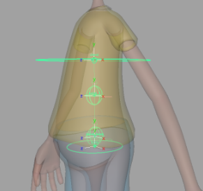

Creates a cartoon spine with IK/FK, bendy bones, Bezier ctrls, manual/auto volume, moveable
pivots, and more.
Guides:
- 'COG' - Position at the center of gravity, around the pelvis
area.
- 'Base' - Position at the base of the spine, slightly above the
pelvis.
- 'Spine_#' - Position these guides along the spine, up until below
the rib-cage. The number of these guides is determined by the attribute 'IK FK Ctrls
Count'.
- 'Chest' - Position at the bottom of the rib-cage.

Attributes:
- 'Single Side Guide' - For
some Aim Guides, the 'side_vector'
(twist) is locked and driven by a single 'side_vector', which keeps the orientation consistent.
Uncheck this attribute to unlock them if you need more control over the twist. Re-template is
required when changes are made. [Video]
- 'Ctrls Scale' - Scale all the
node ctrls. Note that the attachments 'Ctrls
Settings' and 'CtrlsShape' will override
this. [Video]
- 'Clean Transformations' - If
checked, the zeroed
pose will be the same as the bind pose; if unchecked, when
zeroing the ctrls, they will align with a world axis specified in the following two
attributes. [Video]
- 'World Orientation' - The world axis the
ctrls will align with when zeroed. Usually, this attribute's default value is the correct
value. [Video]
- 'World Orient Twist' - Along with
'World Orientation', defines the ctrls zeroed pose. Usually, the default value of 0 is the correct
value. [Video]
- 'Expose RotateOrder' - Exposes
all the ctrls 'RotateOrder' attribute in the Channel Box. [Video]
- 'Secondary Ctrls' - Secondary
ctrls are added under some ctrls to help prevent gimbal lock.
A visibility attribute is added
to the parent ctrl. [Video]
- 'Volume' - Adds 'Auto Volume' and
'Manual Volume' attributes.
- 'Movable Pivots' - Adds a movable pivot to
'cog_ctrl' and 'pelvis_ctrl', similar to the attachment 'MovablePivot'.
- 'IK Ctrls Follow' - IK ctrls will aim at their
next ctrl and move with 'base_ctrl' and 'chest_ctrl'.
- 'IK FK Ctrls Count' - The number of middle ctrls
between 'base_ctrl' and 'chest_ctrl' for both IK and FK.
- 'Ribbon Joints' - The number of skinning
joints the spine has besides the 'pelvis_jnt' and 'chest_jnt'. [Video]
- 'Ribbon Micro Ctrls' - Create a
ctrl for every ribbon skinning joint. [Video]
- 'Bezier Ctrls' - Add ctrls that deform the
ribbon like a Bezier curve. [Video]
- 'Bezier Ctrls Offset' - Position offset of the Bezier ctrls from
the joint chain.
Connections:
- 'Root Input' - Drives the whole node.
- 'Root Output' - An output at the pelvis joint.
- 'Tip Output' - An output at the chest joint.
_____________________________________________
Get Arise at: https://www.ariserigging.com